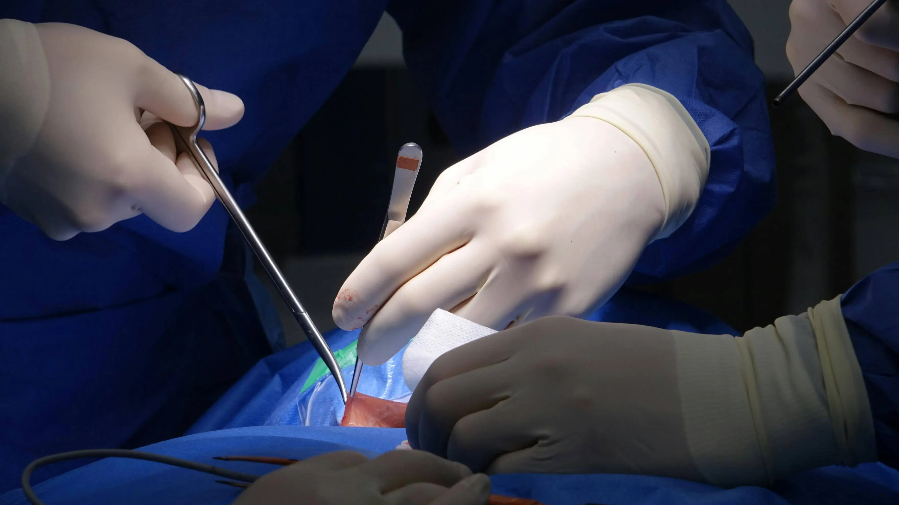

Signs of Surgical Complications: When to Return to Hospital Immediately
Know the warning signs after surgery such as fever, bleeding, severe pain, or infection, and learn when to seek urgent care from Gani Hospital Ramanathapuram.

Introduction
After surgery, mild discomfort, tiredness, and swelling are common during recovery. However, some symptoms may indicate serious surgical complications that need immediate medical attention.
Recognizing these warning signs early can help prevent infection, internal bleeding, delayed healing, and emergency hospitalization. Patients and family members should closely monitor recovery during the first few days after surgery.
At Gani Hospital Ramanathapuram, we provide trusted post-operative care, emergency support, and expert treatment for patients recovering after surgery.
Why Monitoring Recovery is Important
Many patients recover smoothly after surgery with proper rest, medicines, and wound care. But in some cases, complications can develop within hours, days, or even after returning home. Quick treatment can stop minor issues from becoming dangerous health problems.
Monitoring your condition daily helps identify symptoms such as fever, bleeding, severe pain, breathing trouble, or wound infection. Seeking treatment early improves healing and reduces hospital readmission risk.
- Reduces emergency risks
- Protects wound healing
- Prevents serious infection
- Supports faster recovery
1. High Fever After Surgery
A mild fever may happen temporarily after surgery because the body is healing. But fever above 101°F or fever that continues may be a sign of infection in the wound, lungs, or urinary tract.
Do not ignore fever if it is combined with weakness, chills, or body pain. Early treatment can prevent serious complications.
- Persistent fever
- Chills
- Body weakness
- Excess sweating
2. Heavy Bleeding from Wound
Minor spotting on a dressing can be normal after some procedures. However, continuous bleeding, blood-soaked bandages, or fresh blood from the wound requires urgent medical attention.
Heavy bleeding can reduce blood pressure, cause weakness, and delay healing. Immediate hospital treatment is recommended.
- Blood-soaked dressing
- Fresh bleeding
- Dizziness
- Weakness
3. Severe Pain That Gets Worse
Pain usually improves little by little each day after surgery. If pain suddenly becomes worse or medicines do not help, it may indicate infection, swelling, or internal complications.
Persistent severe pain should always be checked by a doctor.
- Sharp pain
- Pain not relieved by medicine
- Swelling with pain
- Sudden worsening discomfort
4. Redness, Swelling or Pus
The surgical wound should gradually heal and look cleaner every day. If you notice redness, swelling, pus, warmth, or bad smell, it may be a wound infection.
Infections should be treated early to avoid spread into deeper tissues.
- Red skin near stitches
- Pus discharge
- Bad smell
- Warm swollen wound
.webp "Emergency symptoms after surgery")
5. Difficulty Breathing or Chest Pain
Difficulty breathing, chest pain, or sudden weakness after surgery can be a medical emergency. These symptoms may be linked to lung infection, blood clots, or heart stress.
Do not delay treatment. Visit Gani Hospital Ramanathapuram immediately.
- Shortness of breath
- Chest tightness
- Rapid breathing
- Sudden weakness
6. Vomiting or No Appetite
- Repeated vomiting
- Unable to eat
- Dehydration
- Severe stomach pain
How to Prevent Surgical Complications
- Take medicines exactly as prescribed
- Keep wound dry and clean
- Attend follow-up visits
- Eat healthy healing foods
- Avoid smoking and alcohol
- Report symptoms early
Related Services at Gani Hospital
When to Return to Hospital Immediately
If you notice fever, bleeding, breathing trouble, pus, vomiting, or severe pain after surgery, do not wait for symptoms to become worse. Visit Gani Hospital Ramanathapuram for urgent expert care, fast diagnosis, and safe recovery support.
Trusted Resources for Surgery Complications
For more detailed medical information about possible surgery complications, warning signs, and patient safety, you can refer to these trusted resources:
Conclusion
Knowing the signs of surgical complications can save lives and prevent long-term health risks. Early treatment helps reduce pain, control infection, and improve recovery after surgery.
For safe post-operative care, emergency treatment, and trusted surgical services in Ramanathapuram, choose Gani Hospital.
Frequently Asked Questions
Is mild pain normal after surgery?
Yes, mild pain is common but worsening pain needs review.
How much fever is dangerous?
Fever above 101°F or persistent fever needs medical attention.
When should I worry about infection?
If there is pus, redness, smell, swelling, or fever.
Can complications happen later?
Yes, some issues develop after discharge.